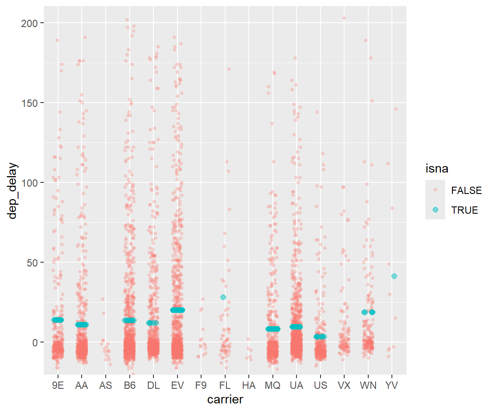
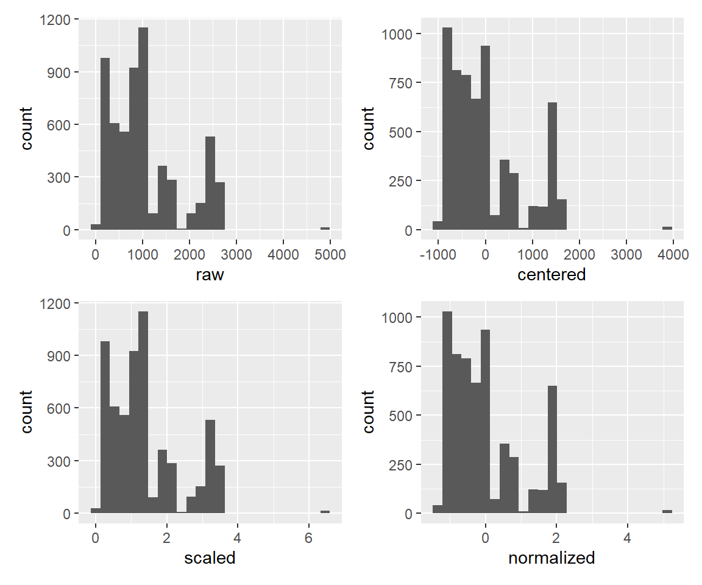
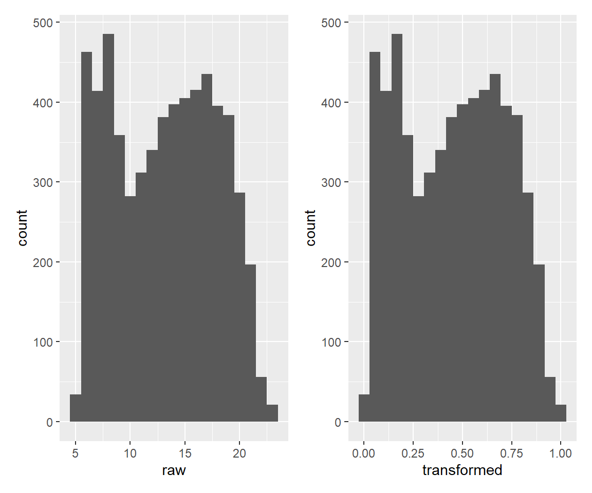
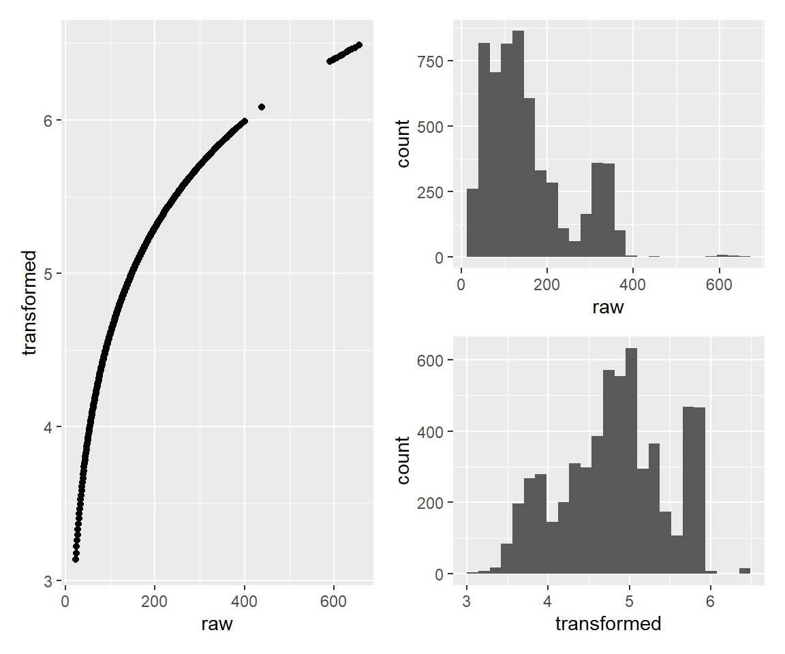
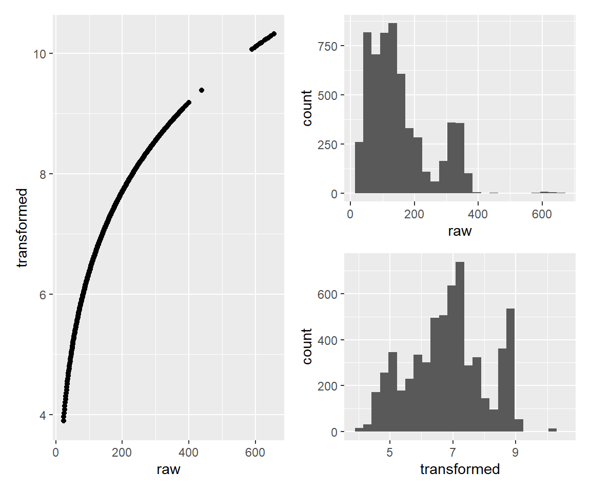
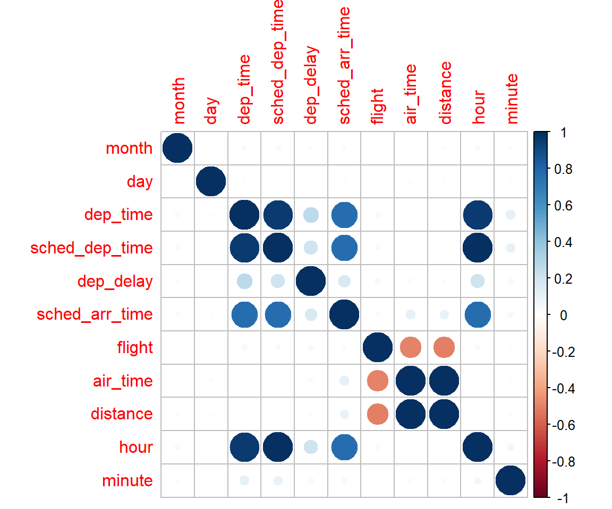
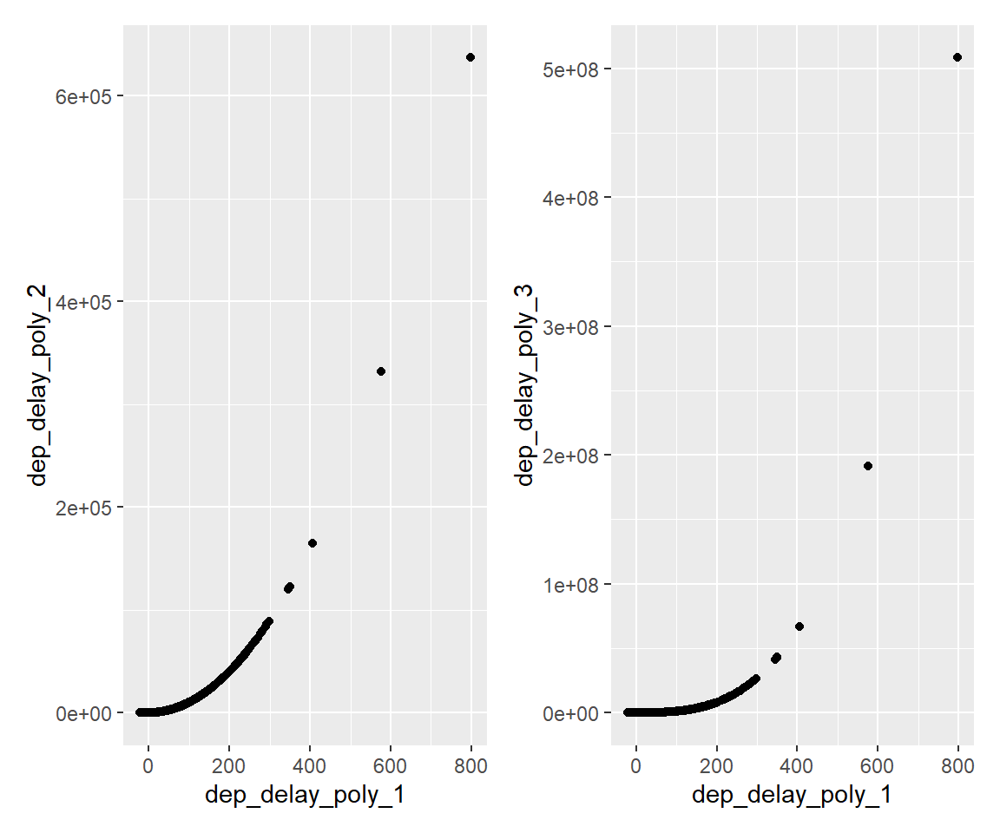
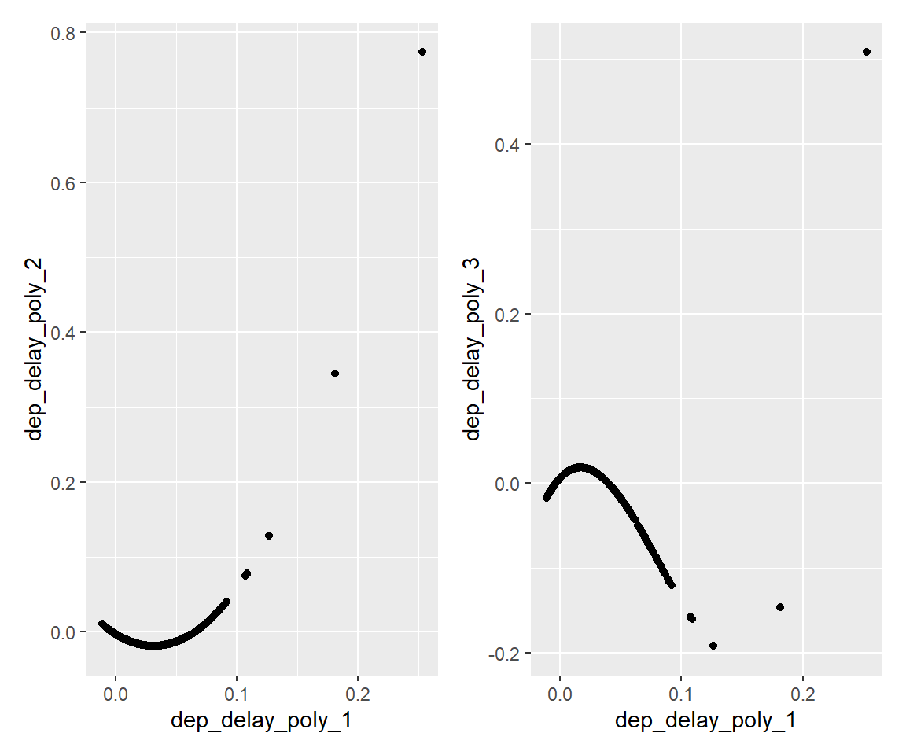
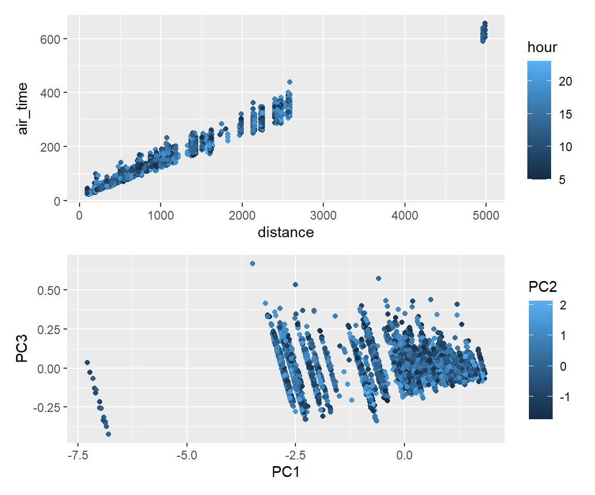

18 recipes
18.1 パッケージの概要
recipesはtidymodelsに含まれるパッケージのうちのひとつで、データの前処理に関する機能を提供します。 データ型の変換（エンコーディング含む）や欠損値補完、正規化、高次項の追加、PCA等、 データクレンジングや特徴量エンジニアリングでよく用いられるデータ処理に対応しているのは勿論ですが、 前処理のtidyな記述（特に、前処理手順のオブジェクト化）が可能になるという点が最大の特徴です。
library(nycflights13) #今回使用するデータセット
library(recipes)
#以下、tidyverse, tidymodelsから必要なパッケージを追加
library(tibble) #data.frame拡張版
library(rsample) #データ分割
library(parsnip) #モデル構築
library(yardstick) #精度評価
library(workflows) #学習過程のオブジェクト化
library(ggplot2) #可視化
#その他のパッケージ
library(patchwork) #ggplotの図を複数並べる
library(embed) #factor型変数に関するrecipesパッケージの拡張
library(corrplot) #相関係数の可視化18.2 データセットの準備
今回使用するデータセットnycflights13は2013年にニューヨークを出発した航空機に関するデータです。
変数arr_delayは到着時の遅延時間（分）を表しており、 これを他の説明変数（出発日、離発着地点とその距離、航空会社コード等）から予測するモデルを構築することを考えます。
データセットの詳細は Hadley Wickham (2021) を参照してください。
なお、以下ではmagrittrパッケージによるパイプ演算子%>%1と、 dplyrパッケージによるデータ操作関数を使用しています。 また、データの分割にはrsampleパッケージを使用しています。
df_all_raw <- flights #flightsのほかにいくつかデータセットがあるが、それらは今回使用しない
#文字列のfactor型への変換、目的変数がNAとなっているレコードの補完、予測に用いない説明変数の除去
df_all <- mutate(df_all_raw, across(where(is.character), as.factor)) %>%
mutate(arr_delay = if_else(is.na(arr_delay), mean(df_all_raw$arr_delay, na.rm = TRUE), arr_delay)) %>%
select(-time_hour, -tailnum, -arr_time)
#time_hourはPOSIXct型で表した予定出発日時で、sched_dep_timeと意味合いは同じ。他のデータセットの結合に用いるもの。
#tailnumは機体番号。カテゴリ数が多すぎて予測に利用するのが難しく、例として取り扱うには向かないため取り除く。
#arr_timeは実際の到着時刻。予定到着時刻と合わせると目的変数(遅延時間)が判明してしまうため取り除く。
summary(df_all) year month day dep_time sched_dep_time
Min. :2013 Min. : 1.000 Min. : 1.00 Min. : 1 Min. : 106
1st Qu.:2013 1st Qu.: 4.000 1st Qu.: 8.00 1st Qu.: 907 1st Qu.: 906
Median :2013 Median : 7.000 Median :16.00 Median :1401 Median :1359
Mean :2013 Mean : 6.549 Mean :15.71 Mean :1349 Mean :1344
3rd Qu.:2013 3rd Qu.:10.000 3rd Qu.:23.00 3rd Qu.:1744 3rd Qu.:1729
Max. :2013 Max. :12.000 Max. :31.00 Max. :2400 Max. :2359
NA's :8255
dep_delay sched_arr_time arr_delay carrier
Min. : -43.00 Min. : 1 Min. : -86.000 UA :58665
1st Qu.: -5.00 1st Qu.:1124 1st Qu.: -16.000 B6 :54635
Median : -2.00 Median :1556 Median : -4.000 EV :54173
Mean : 12.64 Mean :1536 Mean : 6.895 DL :48110
3rd Qu.: 11.00 3rd Qu.:1945 3rd Qu.: 13.000 AA :32729
Max. :1301.00 Max. :2359 Max. :1272.000 MQ :26397
NA's :8255 (Other):62067
flight origin dest air_time distance
Min. : 1 EWR:120835 ORD : 17283 Min. : 20.0 Min. : 17
1st Qu.: 553 JFK:111279 ATL : 17215 1st Qu.: 82.0 1st Qu.: 502
Median :1496 LGA:104662 LAX : 16174 Median :129.0 Median : 872
Mean :1972 BOS : 15508 Mean :150.7 Mean :1040
3rd Qu.:3465 MCO : 14082 3rd Qu.:192.0 3rd Qu.:1389
Max. :8500 CLT : 14064 Max. :695.0 Max. :4983
(Other):242450 NA's :9430
hour minute
Min. : 1.00 Min. : 0.00
1st Qu.: 9.00 1st Qu.: 8.00
Median :13.00 Median :29.00
Mean :13.18 Mean :26.23
3rd Qu.:17.00 3rd Qu.:44.00
Max. :23.00 Max. :59.00
#学習データと評価データの分割
#モデルの精度向上よりも使用例の実行時間短縮を優先するため、以下では件数を減らしておく。
set.seed(2024)
df_small <- testing(initial_split(df_all, prop = 0.98)) #336776件から2%分の6736件を取り出す
set.seed(2024)
split_df_small <- initial_split(df_small, prop = 0.9)
df_train <- training(split_df_small)
df_test <- testing(split_df_small)
split_df_small<Training/Testing/Total>
<6062/674/6736>18.3 基本的な使い方
最初に、recipesパッケージを用いて前処理を行うコードを例示します。
rec <- recipe(df_small, formula = arr_delay ~ .) %>%
step_impute_mean(all_numeric_predictors()) %>% #数値型のNAをその平均値で置換
step_dummy(all_factor()) #factor型変数をダミー変数化
recp <- rec %>% prep(training = df_train, fresh = TRUE)
df_train_baked <- recp %>% bake(new_data = NULL)
df_test_baked <- recp %>% bake(new_data = df_test)大まかなステップは次のとおりです。
recipe関数で、recipeオブジェクトを作成する。step_*関数で、そのデータに適用したい前処理の手続きを定義する。prep関数+bake関数で、学習データにその前処理を適用する。bake関数で、3.と同じ前処理を評価データに適用する。
以下、上記の流れに沿ってそれぞれのコードの意味を解説します。
18.3.1 手順1. recipe関数で、recipeオブジェクトを作成する。
recipesパッケージの最大の特徴は、前処理手順をオブジェクト化できることにあります。 最初に○という前処理を行う、次に△という前処理を行う…という手順書を変数に格納して、 実際に適用するときは「この手順書通りに前処理せよ」という関数だけを書くことで、わかりやすいコードが書けるというものです。
本パッケージでは、この手順書のことをrecipeオブジェクトと呼びます。 その最初のステップとして、まずは空のrecipeオブジェクトを作るのがこの手順1です。
その際に、引数にデータとformulaを指定することで、データにどのような変数があり、 どれが説明変数でどれが目的変数かを指定することが出来ます。
なお、「どれが説明変数でどれが目的変数か」を表すものをroleといい、後から変更することも可能ですが、 通常はこの例のようにrecipe作成時のformula指定で行います。
rec <- recipe(df_small, formula = arr_delay ~ .)これで、arr_delayが目的変数、それ以外が説明変数という指定を行いました。
18.3.2 手順2. step_*関数で、そのデータに適用したい前処理の手続きを定義する。
続いて、この空のrecipeオブジェクトに手順を追加していきます。 手順を追加する関数はstep_*という名前になっており、これを順々に適用していくことになります。
パイプ演算子%>%を用いると、次のようにわかりやすく手順を示しながら追加していくことが出来ます。
rec <- rec %>%
step_impute_mean(all_numeric_predictors()) %>% #数値型のNAをその平均値で置換
step_dummy(all_factor()) #factor型変数をダミー変数化18.3.3 手順3. prep関数+bake関数で、学習データにその前処理を適用する。
次は定義した手順どおりに実際にデータを処理します。 prep関数で実際に前処理を行い、その結果をbake関数で取り出すことができます。
recp <- rec %>% prep(training = df_train, fresh = TRUE)
df_train_baked <- recp %>% bake(new_data = NULL)prepとbakeという2つもの関数を介さないと前処理ができないのはここでは冗長に感じますが、 その理由は後で説明します。
18.3.4 手順4. bake関数で、3.と同じ前処理を評価データに適用する。
手順3で用いたbake関数で、new_data引数に適用したいデータを指定することで、 同じ前処理をそのデータに行うことができます。これでrecipesパッケージによる前処理は完了です。
df_test_baked <- recp %>% bake(new_data = df_test)出来上がりは次のとおり。確かにfactor型変数がダミー変数に変換されていることがわかります。
df_train_baked %>% names() %>% head(40) #多いため省略 [1] "year" "month" "day" "dep_time"
[5] "sched_dep_time" "dep_delay" "sched_arr_time" "flight"
[9] "air_time" "distance" "hour" "minute"
[13] "arr_delay" "carrier_AA" "carrier_AS" "carrier_B6"
[17] "carrier_DL" "carrier_EV" "carrier_F9" "carrier_FL"
[21] "carrier_HA" "carrier_MQ" "carrier_OO" "carrier_UA"
[25] "carrier_US" "carrier_VX" "carrier_WN" "carrier_YV"
[29] "origin_JFK" "origin_LGA" "dest_ACK" "dest_ALB"
[33] "dest_ANC" "dest_ATL" "dest_AUS" "dest_AVL"
[37] "dest_BDL" "dest_BGR" "dest_BHM" "dest_BNA" df_train_baked %>% select(carrier_AA,carrier_AS,carrier_B6,carrier_DL,carrier_EV) %>% head()18.3.5 prep関数の役割
手順3. 以降のコードは一見冗長に見えるかもしれませんが、 一般的なモデリングにおける前処理の手順上はむしろこれが合理的といえます。
今回、step_impute_mean()という関数を用いて、数値型のNAをその平均値で置換しました。 さて、その平均とはどの平均をとっているでしょうか？
例として、dep_timeがNAとなるレコードを1つ見てみます。
row_na_train <- min(which(is.na(df_train$dep_time)))
row_na_test <- min(which(is.na(df_test$dep_time)))
df_train[row_na_train, ]df_test[row_na_test, ]分割前データ、学習データ、評価データそれぞれの平均値は次のとおり。
cat("平均値…分割前データ:", mean(df_small$dep_time, na.rm = TRUE),
", 学習データ:", mean(df_train$dep_time, na.rm = TRUE),
", 評価データ:", mean(df_test$dep_time, na.rm = TRUE))平均値…分割前データ: 1349.004 , 学習データ: 1348.381 , 評価データ: 1354.624一方、前述のNAとなっていた行の前処理結果は次のとおり。
cat("NA前処理後…学習データ:", df_train_baked$dep_time[[row_na_train]],
", 評価データ:",df_test_baked$dep_time[[row_na_test]])NA前処理後…学習データ: 1348 , 評価データ: 1348このように、いずれも学習データの平均値で補完されていることがわかりました。
NAへの対処などの前処理もモデル構築手順のひとつであり、 その効果を正当に評価するためには、学習データに含まれる情報だけを使って対処するべきです。 評価データの情報も含めてしまった場合は「カンニング」してしまっていることになり、 評価データによる精度評価が歪められてしまいます。 これをリーケージ（あるいはリーク）といい、前処理の際には注意を払うべき事項です。
今回のデータでもそのような事情から、敢えて学習データの平均値で評価データを補完しました。
この「学習データの平均値」のような情報は、 続く評価データへの適用に備えてrecipeオブジェクトの中に記憶しておく必要があります。 そのための関数がprepで、この際に何を学習データに用いるかを明示的に指定することになります。
recp <- rec %>% prep(training = df_train, fresh = TRUE)このprep関数では、学習データに実際に前処理を適用しています。
その前処理適用結果がrecipeオブジェクトに保存されるので、 ここでは適用前のオブジェクトをrec、適用後のオブジェクトをrecpと名付けて区別してみました。
この結果はbake関数でnew_data = NULLとすることで取り出すことが出来ます。
df_train_baked <- recp %>% bake(new_data = NULL)そして、bake関数で引数new_dataにデータを指定することで、 異なるデータに「学習データの平均値」のような情報を適用して前処理することができます。
df_test_baked <- recp %>% bake(new_data = df_test)ここで最初のコード（手順1.～3.の途中）に戻りますが、 実はここまでの説明のために敢えて冗長にしていた部分があります。
rec <- recipe(df_small, formula = arr_delay ~ .) %>%
step_impute_mean(all_numeric_predictors()) %>% #数値型のNAをその平均値で置換
step_dummy(all_factor()) #factor型変数をダミー変数化
recp <- rec %>% prep(training = df_train, fresh = TRUE)より単純にできる点は次のとおりです。
- recipeオブジェクト作成時に
df_smallではなく学習データdf_trainを最初から指定。prep関数は引数trainingを省略するとrecipeオブジェクト作成時のデータを参照する仕様のため、こうすることでprep関数の引数が省略できる。 prep関数適用前のrecipeオブジェクトを使いまわす予定がないので、パイプ演算子でまとめてprep関数まで適用。
これらを反映すると次のようになります。 ここまでの事項を把握したうえであれば、このように記述してもよいでしょう。
recp <- recipe(df_train, formula = arr_delay ~ .) %>%
step_impute_mean(all_numeric_predictors()) %>% #数値型のNAをその平均値で置換
step_dummy(all_factor()) %>% #factor型変数をダミー変数化
prep()あわせて次のような点にも注意しましょう。
- レコード全体を取り除くタイプの前処理には細心の注意を払う。
- 学習データと同じルールでレコードを取り除くべきかはケースバイケースです。 与えられた評価データすべてへの予測を行いたいなら、1件たりとも取り除くべきではありません。
step_*関数に備わるskip引数（bake時に手順をスキップするかどうかを指定）は このような観点で設けられているもののため、使用の際は留意してください。
- 文字列型からfactor型への変換など、評価データを含めた全体に対して一度だけ行えばよい前処理は、 recipeオブジェクトに含めずに前もって実施する。
- ここでfactor型への変換に評価データを含める理由は、評価データにしかないカテゴリというのが存在しうるからです。 そのようなものも学習データだけを用いてうまく対処できるならばこの限りではありません。
- 本稿では「データセットの準備」の節でrecipesパッケージに頼ることなく（dplyrパッケージのみで）まとめて行っていますが、 ここまでの事項を把握しているのであればrecipesパッケージを使用しても問題はありません。
18.4 step_*関数の基本
前処理の手順を記述するのに使用するstep_*関数について、基本的な使い方を説明します。
基本的な構文は次のとおりです。
rec <- df_train %>% recipe(arr_delay ~ .) %>%
step_relu(dep_time, sched_dep_time, #前処理を行う変数の指定
role = "predictor", #新たに追加される変数のrole
trained = FALSE, #本パッケージの仕様上すべてのstep_*関数に存在する引数 通常使用する際は指定不要
#step_relu固有の引数↓
shift = 1200,
prefix = "right_relu_",
#step_relu固有の引数↑
skip = FALSE, #new_dataがNULLでないときにスキップするかどうか
id = "relu_deptime1200")#各stepを判別するためのid
#前処理を適用して冒頭だけを表示
rec %>% prep() %>% bake(new_data = NULL) %>%
select(dep_time, sched_dep_time, right_relu_dep_time, right_relu_sched_dep_time) %>% head()全step_*関数で共通する引数について説明すると次のとおりです。
| 引数 | 説明 |
|---|---|
| 第1引数 | recipeオブジェクトです。通常はパイプ演算子%>%で記述されるため、コードには現れません。 |
| 第2引数以降（以下に記載がある引数以外） | 前処理を行う変数を指定します。 ここでは上の例のように変数名を単純に指定するだけでなく、 all_numeric_predictors()等のようなselectorを用いることで、変数の型やrole等に基づく条件指定も可能です。 |
role |
追加される変数のroleを指定するものです。 デフォルトで"predictor"、すなわち説明変数の扱いとなっているため通常は指定する必要はありませんが、 "predictor"以外のroleを使用している場合、目的変数を加工する場合は注意が必要です。 |
trained |
仕様上存在している引数というだけで、通常は指定する必要はありません。 |
| （各stepの固有の引数） | |
skip |
bake関数でnew_dataがNULLでないときにスキップするかどうかを指定します。 通常、デフォルト値はFALSEとなっていますが、一部のレコードを削除するタイプのstepではTRUEがデフォルトになっており、 評価データのレコードを誤って取り除くことが無いよう配慮されています。 |
id |
recipeオブジェクトに組み込まれた各々のstepを識別するための文字列を指定します。 デフォルトでランダムな文字列が付与されるため指定しなくとも問題はありませんが、 多数のstepを取り扱っていてそれらをうまく識別したいような場合には指定することも考えられます。 |
18.4.1 role
ここまで解説したとおり、roleとは基本的には説明変数か目的変数かを識別するためのものです。
summary関数でrecipeオブジェクトの内容を確認すると、 各変数にroleとして"predictor"か"outcome"のどちらかが割り当てられているということがわかります。
rec %>% summary()update_role関数などで任意の文字列を割り当てることも可能です。
rec %>% update_role(year, new_role = "test") %>% summary() %>% head()レコードを特定するためだけに使われるID列のようなものを、目的変数でも説明変数でもないとして特別扱いする場合に使用されることがあります。 しかしこれはやや発展的な使い方になるため、roleに割り当てられた文字列で説明変数かどうかを識別している、ということだけ把握しておけばよいでしょう。
18.4.2 前処理を行う変数の選択方法（selector）
step_*関数の適用時にはどの変数に前処理を行うかを指定する必要がありました。
指定方法には大きく2通りがあり、単純に変数名を記述する方法と、selectorを使う方法があります。 ここでselectorとは、前処理を行う変数を条件指定で選択するものです。
代表的な方法を挙げると次のとおりです。
rec_tmp <- df_train %>% recipe(arr_delay ~ .)
#指定した変数を抜き出すstep
rec_tmp %>% step_select(year, month, day) %>%
prep() %>% bake(new_data = NULL) %>% names()[1] "year" "month" "day" #マイナス指定でその変数以外を取り出すことが可能 目的変数も含まれてしまうことには注意
rec_tmp %>% step_select(-year) %>%
prep() %>% bake(new_data = NULL) %>% names() [1] "month" "day" "dep_time" "sched_dep_time"
[5] "dep_delay" "sched_arr_time" "carrier" "flight"
[9] "origin" "dest" "air_time" "distance"
[13] "hour" "minute" "arr_delay" #tidyselectによる文字列検索での指定が可能
rec_tmp %>% step_select(tidyselect::starts_with("dep_"), -tidyselect::contains("delay")) %>%
prep() %>% bake(new_data = NULL) %>% names()[1] "dep_time"#正規表現での指定も可能
rec_tmp %>% step_select(tidyselect::matches("(dep|arr)_(delay|time)")) %>%
prep() %>% bake(new_data = NULL) %>% names()[1] "dep_time" "sched_dep_time" "dep_delay" "sched_arr_time"
[5] "arr_delay" #型による指定
rec_tmp %>% step_select(all_numeric()) %>%
prep() %>% bake(new_data = NULL) %>% names() [1] "year" "month" "day" "dep_time"
[5] "sched_dep_time" "dep_delay" "sched_arr_time" "flight"
[9] "air_time" "distance" "hour" "minute"
[13] "arr_delay" #roleによる指定
rec_tmp %>% step_select(-all_outcomes()) %>%
prep() %>% bake(new_data = NULL) %>% names() [1] "year" "month" "day" "dep_time"
[5] "sched_dep_time" "dep_delay" "sched_arr_time" "carrier"
[9] "flight" "origin" "dest" "air_time"
[13] "distance" "hour" "minute" #特定の型の目的変数(predictor)を指定
rec_tmp %>% step_select(all_numeric_predictors()) %>%
prep() %>% bake(new_data = NULL) %>% names() [1] "year" "month" "day" "dep_time"
[5] "sched_dep_time" "dep_delay" "sched_arr_time" "flight"
[9] "air_time" "distance" "hour" "minute" 詳細は Max Kuhn, Hadley Wickham, and Emil Hvitfeldt (2024b) を参照してください。
18.5 前処理の紹介
本パッケージで対応している前処理は Max Kuhn, Hadley Wickham, and Emil Hvitfeldt (2024a) に記載があります。
その中から代表的なものを抽出して紹介します。
18.5.1 レコードの抽出・削除
本パッケージの関数でレコードの抽出・削除を行うことも可能ですが、 前述したように学習データと評価データで同じルールでレコードを抽出・削除してしまうと 不都合が生じうることから、多くはskip引数がデフォルトでTRUEにセットされています。
18.5.1.1 dplyrの関数による操作
本パッケージでは、dplyrの関数を用いてレコードの抽出・削除を行うものが用意されています。
| 関数名 | 説明 |
|---|---|
step_filter |
条件指定によるレコード抽出 |
step_slice |
行番号指定によるレコード抽出 |
step_sample |
ランダム抽出（割合指定または件数指定） |
#条件指定による抽出…dplyr::filterと同等
rec_tmp %>% step_filter(month >= 11, carrier == "AA") %>%
prep() %>% bake(new_data = NULL) %>% select(month, carrier, air_time) %>% head()#行番号指定による抽出…dplyr::sliceと同等
rec_tmp %>% step_slice(1000:1003) %>%
prep() %>% bake(new_data = NULL) %>% select(month, carrier, air_time)#ランダム抽出（件数指定）…dplyr::sample_nと同等
set.seed(2024)
rec_tmp %>% step_sample(size = 3) %>%
prep() %>% bake(new_data = NULL) %>% select(month, carrier, air_time)#ランダム抽出（割合指定）…dplyr::sample_fracと同等
set.seed(2024)
rec_tmp %>% step_sample(size = 0.0008) %>% #sizeに1より小さな数値を入力する
prep() %>% bake(new_data = NULL) %>% select(month, carrier, air_time)18.5.1.2 欠損値の削除
step_naomit関数により、欠損値が含まれるレコードを削除することができます。
paste("元のNA値の個数: ", df_train %>% is.na %>% sum)[1] "元のNA値の個数: 569"paste("処理後のNA値の個数: ",
rec_tmp %>% step_naomit(all_predictors()) %>%
prep() %>% bake(new_data = NULL) %>% is.na %>% sum
)[1] "処理後のNA値の個数: 0"18.5.2 factor型変数関係の操作
18.5.2.1 factor変数化
step_num2factor関数で、数値型変数をfactor型変数に変換できます。
df_tmp <- rec_tmp %>%
step_num2factor(month,
levels = as.character(1:12), #カテゴリ名を文字列のベクトルで与える
ordered = TRUE) %>% #順序付きにする
prep() %>% bake(new_data = NULL) %>% select(month_ord = month)
bind_cols(df_train[,"month"], df_tmp) %>% head()ビニング（いくつかの区間に分ける）を行うならばstep_cut関数を使用したほうが簡単でしょう。
df_tmp <- rec_tmp %>%
step_cut(month,
breaks = seq(3,9,3), #分割ポイント
include_outside_range = FALSE) %>%
#FALSEの場合、学習データの範囲を外れるデータが評価データ等に現れた場合はNA扱いになる
prep() %>% bake(new_data = NULL) %>% select(month_ord = month)
bind_cols(df_train[,"month"], df_tmp) %>% head(10)18.5.2.2 第1カテゴリの変更（step_relevel）
step_relevel関数で、factor型変数の第1カテゴリの変更ができます。
#変更前
df_train$origin %>% levels()[1] "EWR" "JFK" "LGA"#変更後
rec_tmp %>% step_relevel(origin, ref_level = "LGA") %>%
prep() %>% bake(new_data = NULL) %>% select(origin) %>% unlist() %>% levels()[1] "LGA" "EWR" "JFK"18.5.2.3 出現頻度の少ないカテゴリの統合（step_other）
step_other関数で、出現頻度の少ないカテゴリを「その他」に統合することができます
#変更前
table(df_train$carrier)
9E AA AS B6 DL EV F9 FL HA MQ OO UA US VX WN YV
325 602 17 971 807 998 15 68 6 491 0 1077 371 110 193 11 #変更後
rec_tmp %>% step_other(carrier,
threshold = 0.05, #出現率がこれを下回るカテゴリを「その他」に含める
other = "other") %>% #「その他」のカテゴリ名
prep() %>% bake(new_data = NULL) %>% select(carrier) %>% table()carrier
9E AA B6 DL EV MQ UA US other
325 602 971 807 998 491 1077 371 420 18.5.2.4 ダミー変数化（step_dummy）
step_dummy関数でダミー変数に変換できます。
df_tmp <- rec_tmp %>% step_dummy(origin) %>%
prep() %>% bake(new_data = NULL) %>% select(tidyselect::starts_with("origin"))
bind_cols(df_train[,"origin"], df_tmp) %>% head()step_dummy関数の引数としてone_hot = TRUEを与えると、第1カテゴリに対応するダミー変数も作られます。 （いわゆるワンホットエンコーディング）
rec_tmp %>% step_dummy(origin, one_hot = TRUE) %>%
prep() %>% bake(new_data = NULL) %>% select(tidyselect::starts_with("origin")) %>% names()[1] "origin_EWR" "origin_JFK" "origin_LGA"18.5.3 欠損値の補完
欠損値の補完にはstep_impute_*シリーズを使用します。
18.5.3.1 平均値で補完（step_impute_mean）
例えば、平均値で補完する場合はstep_impute_meanを使用します。
row_na_train <- min(which(is.na(df_train$dep_time))) #NAとなっているレコード
paste("補完前:", df_train %>% slice(row_na_train) %>% select(dep_time), collapse='')[1] "補完前: NA"tmp <- rec_tmp %>% step_impute_mean(all_numeric_predictors()) %>%
prep() %>% bake(new_data = NULL) %>% slice(row_na_train) %>% select(dep_time)
#dep_timeがint型のため、平均値もint型に変換される
paste("補完後:", tmp,
", 実際の平均値:", df_train %>% summarize(mean(dep_time, na.rm = TRUE)), collapse='')[1] "補完後: 1348 , 実際の平均値: 1348.38129251701"18.5.3.2 線形回帰で補完（step_impute_linear）
予測モデルを用いて補完するものもあります。
例えばstep_impute_linearでは線形回帰に基づいて補完されます。 以下の例ではcarrierを説明変数としてdep_delayを予測する線形回帰モデルを構築し、これに基づきdep_delayの欠損値を補完します。 この場合はcarrierがfactor型変数であるため、単純にcarrierごとのdep_delayの平均値で補完するのと同じです。
#引数impute_withにimp_vars(変数名)を渡すことで、欠損値補完に用いるモデルの説明変数を指定
#複数個指定やselectorによる指定も可能
df_tmp <- rec_tmp %>% step_impute_linear(dep_delay, impute_with = imp_vars(carrier)) %>%
prep() %>% bake(new_data = NULL)
#横軸にcarrier、縦軸にdep_delay、小さな点はもともとあった値、大きな点は欠損値に対して補完された値
df_tmp2 <- bind_cols(carrier = df_train$carrier, dep_delay = df_tmp$dep_delay, isna = is.na(df_train$dep_delay))
ggplot() +
geom_point(data = df_tmp2 %>% filter(!isna), mapping = aes(x = carrier, y = dep_delay, color = isna),
position = position_jitter(width = 0.2, height = 0, seed = 2024), alpha = 0.25, size = 1) +
geom_point(data = df_tmp2 %>% filter(isna), mapping = aes(x = carrier, y = dep_delay, color = isna),
position = position_jitter(width = 0.2, height = 0, seed = 2024), alpha = 0.5, size = 2) +
coord_cartesian(ylim = c(-10, 200))
18.5.3.3 その他の関数
そのほか、詳細な説明は割愛しますが、以下のような関数が用意されています。（これで全てではありません）
| 関数名 | 欠損値の補完方法 |
|---|---|
step_impute_median |
中央値 |
step_impute_mode |
最頻値 |
step_unknown |
カテゴリ"unknown" |
step_impute_knn |
k近傍法 |
step_impute_bag |
バギングされた決定木 |
18.5.4 数値型データのスケール変換
数値型データのスケール変換を行う関数を紹介します。
18.5.4.1 標準化
まず標準化に関係するものとして、 中心化（平均値が0となるように平行移動）を行うstep_center関数、 標準偏差が1となるようなスケール変換を行うstep_scale関数、 そしてその両方を行うstep_normalize関数があります。
df_tmp_c <- rec_tmp %>% step_center(distance) %>% prep() %>% bake(new_data = NULL)
df_tmp_s <- rec_tmp %>% step_scale(distance) %>% prep() %>% bake(new_data = NULL)
df_tmp_n <- rec_tmp %>% step_normalize(distance) %>% prep() %>% bake(new_data = NULL)
df_tmp2 <- bind_cols(raw = df_train$distance, centered = df_tmp_c$distance,
scaled = df_tmp_s$distance, normalized = df_tmp_n$distance)
g <- ggplot() + geom_histogram(data = df_tmp2, mapping = aes(x = raw), bins = 25)
gc <- ggplot() + geom_histogram(data = df_tmp2, mapping = aes(x = centered), bins = 25)
gs <- ggplot() + geom_histogram(data = df_tmp2, mapping = aes(x = scaled), bins = 25)
gn <- ggplot() + geom_histogram(data = df_tmp2, mapping = aes(x = normalized), bins = 25)
(g + gc)/(gs + gn)
18.5.4.2 正規化（step_range）
数値データに対してはこのような標準化以外にも、特定の範囲に数値を収める正規化という処理も行われることがあります。
step_range関数でこれを実現することができます。以下では0から1の範囲に収めるようにスケール変換を行っています。
df_tmp <- rec_tmp %>% step_range(hour, min = 0, max = 1) %>% prep() %>% bake(new_data = NULL)
df_tmp2 <- bind_cols(raw = df_train$hour, transformed = df_tmp$hour)
g1 <- ggplot() + geom_histogram(data = df_tmp2, mapping = aes(x = raw), bins = max(df_train$hour)-min(df_train$hour)+1)
g2 <- ggplot() + geom_histogram(data = df_tmp2, mapping = aes(x = transformed), bins = max(df_train$hour)-min(df_train$hour)+1)
g1 + g2
18.5.4.3 対数変換（step_log）
標準化・正規化とは異なるものとして、分布の形状自体を変更するような変換も行われることがあります。
その代表的なものとして対数変換がありますが、これを行うにはstep_log関数を使用します。
df_tmp <- rec_tmp %>% step_log(air_time) %>% prep() %>% bake(new_data = NULL)
df_tmp2 <- bind_cols(transformed = df_tmp$air_time, raw = df_train$air_time)
g1 <- ggplot() + geom_point(data = df_tmp2 %>% filter(!is.na(raw)), mapping = aes(x = raw, y = transformed))
g2 <- ggplot() + geom_histogram(data = df_tmp2 %>% filter(!is.na(raw)), mapping = aes(x = raw), bins = 25)
g3 <- ggplot() + geom_histogram(data = df_tmp2 %>% filter(!is.na(transformed)), mapping = aes(x = transformed), bins = 25)
g1 + (g2 / g3)
18.5.4.4 Box-Cox変換（step_BoxCox）
Box-Cox変換は対数変換を一般化したもので、 定数\(\lambda\)を用いて以下のような式で記述されます。 主に分布を正規分布に近づけるために用いられます。
\[ f(x) = \begin{cases} \frac{x^\lambda-1}{\lambda} & \text{if } \lambda \neq 0 \\ \ln{x} & \text{if } \lambda = 0 \end{cases} \]
step_BoxCox関数により、このBox-Cox変換を行うことができます。
recp_tmp <- rec_tmp %>% step_impute_mean(air_time) %>% step_BoxCox(air_time) %>% prep()
df_tmp <- recp_tmp %>% bake(new_data = NULL)
df_tmp2 <- bind_cols(transformed = df_tmp$air_time, raw = df_train$air_time)
g1 <- ggplot() + geom_point(data = df_tmp2 %>% filter(!is.na(raw)), mapping = aes(x = raw, y = transformed))
g2 <- ggplot() + geom_histogram(data = df_tmp2 %>% filter(!is.na(raw)), mapping = aes(x = raw), bins = 25)
g3 <- ggplot() + geom_histogram(data = df_tmp2 %>% filter(!is.na(transformed)), mapping = aes(x = transformed), bins = 25)
g1 + (g2 / g3)
このstep_BoxCox関数の優れているところは、正規分布に近づくような定数\(\lambda\)を自動的に設定してくれる点です。
cat("Box-Cox変換のλ:", recp_tmp$steps[[2]]$lambdas)Box-Cox変換のλ: 0.133594418.5.4.5 その他の関数
そのほか、詳細な説明は割愛しますが、以下のような関数が用意されています。（これで全てではありません）
| 関数名 | 変換方法 |
|---|---|
step_percentile |
パーセンタイル点 |
step_sqrt |
平方根 |
step_inverse |
逆数（\(\frac1{x+c}\)） |
step_logit |
logit変換（\(\log (x) - \log (1-x)\)） |
step_invlogit |
逆logit変換（\(\frac1{1+\exp(-x)}\)） |
step_relu |
ReLU関数（\(\max (0,x-c)\)）等 |
step_YeoJohnson |
Yeo-Johnson変換2 |
18.5.5 日付・時刻型データの加工
日付型や時刻型（Date型、POSIXct型）の変数に対して年や月などの情報を抜き出す場合は step_date関数やstep_time関数を使用することが出来ます。
df_sliced <- df_all_raw %>% slice(seq(1, 100000, 10000))
df_tmp <- recipe(df_sliced, arr_delay ~ .) %>%
step_date(time_hour,
features = c("year", "decimal", "month", "week", "doy", "dow")) %>%
#doy: day of year, dow: day of week
prep() %>% bake(new_data = NULL)
df_tmp %>% select(time_hour, time_hour_year, time_hour_decimal, time_hour_month) %>% head() %>% print(width = Inf)# A tibble: 6 × 4
time_hour time_hour_year time_hour_decimal time_hour_month
<dttm> <int> <dbl> <fct>
1 2013-01-01 05:00:00 2013 2013. Jan
2 2013-01-12 10:00:00 2013 2013. Jan
3 2013-01-23 23:00:00 2013 2013. Jan
4 2013-10-04 06:00:00 2013 2014. Oct
5 2013-10-14 20:00:00 2013 2014. Oct
6 2013-10-25 14:00:00 2013 2014. Oct df_tmp %>% select(time_hour, time_hour_week, time_hour_doy, time_hour_dow) %>% head() %>% print(width = Inf)# A tibble: 6 × 4
time_hour time_hour_week time_hour_doy time_hour_dow
<dttm> <int> <int> <fct>
1 2013-01-01 05:00:00 1 1 Tue
2 2013-01-12 10:00:00 2 12 Sat
3 2013-01-23 23:00:00 4 23 Wed
4 2013-10-04 06:00:00 40 277 Fri
5 2013-10-14 20:00:00 41 287 Mon
6 2013-10-25 14:00:00 43 298 Fri recipe(df_sliced, arr_delay ~ .) %>%
step_time(time_hour,
features = c("decimal_day", "hour", "hour12")) %>%
prep() %>% bake(new_data = NULL) %>% select(tidyselect::starts_with("time_hour")) %>% head() %>% print(width = Inf)# A tibble: 6 × 4
time_hour time_hour_decimal_day time_hour_hour time_hour_hour12
<dttm> <dbl> <int> <int>
1 2013-01-01 05:00:00 5 5 5
2 2013-01-12 10:00:00 10 10 10
3 2013-01-23 23:00:00 23 23 11
4 2013-10-04 06:00:00 6 6 6
5 2013-10-14 20:00:00 20 20 8
6 2013-10-25 14:00:00 14 14 218.5.6 変数の抽出・削除
18.5.6.1 step_select, step_rmによる抽出・削除
step_selectで指定した変数を抽出できます。 逆に、step_rmで指定した変数を削除できます。
#数値型の説明変数をすべて選択
rec_tmp %>% step_select(all_numeric_predictors()) %>%
prep() %>% bake(new_data = NULL) %>% names() [1] "year" "month" "day" "dep_time"
[5] "sched_dep_time" "dep_delay" "sched_arr_time" "flight"
[9] "air_time" "distance" "hour" "minute" #数値型の説明変数をすべて削除
rec_tmp %>% step_rm(all_numeric_predictors()) %>%
prep() %>% bake(new_data = NULL) %>% names()[1] "carrier" "origin" "dest" "arr_delay"18.5.6.2 相関の高い変数の削除
step_corr関数により、相関の高い変数を削除することができます。
#もとの変数名
tmp_names1 <- df_train %>% names()
#削除後の変数名
tmp_names2 <- rec_tmp %>%
step_corr(all_numeric_predictors(), -year,
threshold = 0.9) %>% #相関係数0.9以上の組があれば変数を削除
prep() %>% bake(new_data = NULL) %>% names()
cat("削除された変数：", paste(setdiff(tmp_names1,tmp_names2), collapse=", "))削除された変数： dep_time, sched_dep_time, air_time実際に相関行列を確認してみると次のとおり。
dep_timeとsched_dep_timeはhourと相関が高いため、 air_timeはdistanceと相関が高いため削除されました。
mat_cor <- cor(rec_tmp %>% step_select(all_numeric_predictors(), -year) %>% prep() %>% bake(new_data = NULL),
method = 'pearson',
use = 'pairwise.complete.obs')
corrplot::corrplot(mat_cor)
18.5.6.3 分散がゼロの変数の削除
step_zv関数で、分散がゼロ（すべての観測値が同一）の変数を削除できます。
#もとの変数名
tmp_names1 <- df_train %>% names()
#削除後の変数名
tmp_names2 <- rec_tmp %>% step_zv(all_numeric_predictors()) %>%
prep() %>% bake(new_data = NULL) %>% names()
cat("削除された変数：", paste(setdiff(tmp_names1,tmp_names2), collapse=", "))削除された変数： year18.5.7 変数の追加
変数を加工するものだけでなく、追加するものもあります。
18.5.7.1 交互作用項の追加（step_interact）
例えば、step_interact関数を用いることで交互作用項（2つ以上の変数の積）を追加することが出来ます。
#他のstep_*関数とは異なり、引数termsにformulaを与える必要がある
df_tmp <- rec_tmp %>% step_interact(terms = ~ air_time*dep_delay + air_time*origin) %>%
prep() %>% bake(new_data = NULL)
#factor型変数はダミー変数化した状態で作成される
df_tmp %>% select(dep_delay, tidyselect::starts_with("air_time")) %>% head()names(df_tmp) [1] "year" "month" "day"
[4] "dep_time" "sched_dep_time" "dep_delay"
[7] "sched_arr_time" "carrier" "flight"
[10] "origin" "dest" "air_time"
[13] "distance" "hour" "minute"
[16] "arr_delay" "air_time_x_dep_delay" "air_time_x_originJFK"
[19] "air_time_x_originLGA"#formulaに与える変数名にtidyselectを使用することも可能
df_tmp <- rec_tmp %>% step_dummy(origin) %>% #事前にダミー変数化している場合
step_interact(terms = ~ tidyselect::starts_with("origin_")*air_time,
sep = ":") %>% #変数名を○:○にする
prep() %>% bake(new_data = NULL)
names(df_tmp) [1] "year" "month" "day"
[4] "dep_time" "sched_dep_time" "dep_delay"
[7] "sched_arr_time" "carrier" "flight"
[10] "dest" "air_time" "distance"
[13] "hour" "minute" "arr_delay"
[16] "origin_JFK" "origin_LGA" "origin_JFK:air_time"
[19] "origin_LGA:air_time"18.5.7.2 高次の項の追加（step_poly）
また、step_poly関数により、数値型変数に対して2乗や3乗の項を追加することができます。 線形モデルで非線形な作用を捉える際に役立ちます。
df_tmp <- rec_tmp %>% step_impute_mean(dep_delay) %>%
step_poly(dep_delay, degree = 3, #3次の項まで追加
options = list(raw = TRUE)) %>%
prep() %>% bake(new_data = NULL)
df_tmp %>% select(tidyselect::starts_with("dep_delay")) %>% head()g2 <- ggplot() + geom_point(data = df_tmp, mapping = aes(x = dep_delay_poly_1, y = dep_delay_poly_2))
g3 <- ggplot() + geom_point(data = df_tmp, mapping = aes(x = dep_delay_poly_1, y = dep_delay_poly_3))
g2 + g3
なお、options = list(raw = TRUE)という指定が無い場合は代わりに直交多項式が用いられます。
recp_tmp <- rec_tmp %>% step_impute_mean(dep_delay) %>%
step_poly(dep_delay, degree = 3) %>% prep()
df_tmp <- recp_tmp %>% bake(new_data = NULL)
df_tmp %>% select(tidyselect::starts_with("dep_delay")) %>% head()g2 <- ggplot() + geom_point(data = df_tmp, mapping = aes(x = dep_delay_poly_1, y = dep_delay_poly_2))
g3 <- ggplot() + geom_point(data = df_tmp, mapping = aes(x = dep_delay_poly_1, y = dep_delay_poly_3))
g2 + g3
ここで「直交」とは、新しい3変数について学習データにおける積の和（内積）がゼロになるということです。
この条件が満たされるように1次式、2次式、3次式の順で係数を決定していきます。
#浮動小数点演算の誤差によりぴったりゼロにはならないが、ほぼゼロ
cat("内積の値:",
sum(df_tmp$dep_delay_poly_1 * df_tmp$dep_delay_poly_2),
sum(df_tmp$dep_delay_poly_1 * df_tmp$dep_delay_poly_3),
sum(df_tmp$dep_delay_poly_2 * df_tmp$dep_delay_poly_3))内積の値: 7.617431e-17 3.648652e-16 -1.503762e-1518.5.7.3 dplyrパッケージのmutate（step_mutate）
最も強力なのはdplyrパッケージのmutate関数と同じことができるstep_mutate関数で、 これを用いればたいていの変換は実装可能でしょう。
#変数の加工と追加を同時に行う
rec_tmp %>%
step_mutate(air_time = 0.01 * air_time, hm = hour*60 + minute) %>%
prep() %>% bake(new_data = NULL) %>%
select(air_time, hour, minute, hm) %>% head()ただし、group_by関数とsummarize関数による、グループ化しての集計に相当する操作はできません。 これは安直にこのような操作を実装してしまうと、リーケージの問題がつきまとうためだと考えられます。
実際、（グループ化はしていませんが）ある変数の平均値を格納する変数をstep_mutate関数を用いて追加してみたところ、 学習データでは学習データでの、評価データでは評価データでの平均値が格納されました。
recp_tmp <- rec_tmp %>% step_mutate(mean_arr_delay = mean(arr_delay)) %>% prep()
bind_cols(
recp_tmp %>% bake(new_data = NULL) %>% select(mean_arr_delay_train = mean_arr_delay) %>% slice(1),
recp_tmp %>% bake(new_data = df_test) %>% select(mean_arr_delay_test = mean_arr_delay) %>% slice(1)
)ターゲットエンコーディング（学習データのカテゴリ別の目的変数平均値を特徴量として追加）を実装することを意図して、 この例を単純に別のfactor型変数でグループ化したようなものを実装してしまった場合、 評価データの平均値を使用するというリーケージが発生することになります。
18.5.7.4 その他の関数
そのほか、詳細な説明は割愛しますが、以下のような関数が用意されています。（これで全てではありません）
| 関数名 | 変換方法 |
|---|---|
step_harmonic |
調和分析に基づき三角関数による分解を行う |
step_spline_b |
B-スプライン基底関数による分解を行う |
step_spline_natural |
自然スプライン基底関数による分解を行う |
18.5.8 主成分分析
複数の特徴量を要約する手法として、主成分分析（Principal Component Analysis; PCA）と呼ばれるものがあります。
主成分分析とは、ベクトル値の観測が複数与えられた時に、 その分散が最大となる向きを選び、その方向の成分をPC1、 それと直交する中で分散が最大となる向きを選び、方向の成分をPC2、… となるような変数変換（回転）を行うものです。この変換で得られるものを主成分といいます。
step_pca関数を用いることで、この主成分分析で得られた主成分をデータに追加することができます。
以下の例では相関の非常に強いdistance, air_timeの2変数に、 あまり相関のなさそうなhourを加えた3変数による主成分分析を行い、 主成分をPC1、PC2、PC3という変数名で追加します。
recp_tmp <- rec_tmp %>%
step_naomit(distance, air_time, hour) %>% #欠損値があるとエラーになるため取り除いておく
step_pca(distance, air_time, hour,
options = c(center = TRUE, scale. = TRUE), #主成分分析の際に正規化を行う
prefix = "PC",
keep_original_cols = TRUE) %>% #元の変数を残す
prep()
df_tmp <- recp_tmp %>% bake(new_data = NULL)
g1 <- ggplot() + geom_point(data = df_tmp, mapping = aes(x = distance, y = air_time, colour = hour))
g2 <- ggplot() + geom_point(data = df_tmp, mapping = aes(x = PC1, y = PC3, colour = PC2))
g1/g2
PC1としては「短いフライトである」ことを表すもの、PC2はほぼ-hour、 PC3は（正規化した）距離と時間の長さの差分にあたるものが抽出されていることがわかります。
このことは、回転行列を抽出することでも確かめられます。
res <- recp_tmp$steps[[2]]$res
center <- res$center #中心化に用いたオフセット
scale <- res$scale #分散を1にするための倍率
rotation <- res$rotation #回転行列
i <- 1
row <- (df_tmp[i,])
row_raw <- row %>% select(distance, air_time, hour) %>% unlist()
row_pca <- row %>% select(PC1, PC2, PC3)%>% unlist()
normalized <- (row_raw - center)/scale
#正規化後ベクトル
print(normalized) distance air_time hour
0.6951339 0.4325819 2.1172241 #回転行列"
print(rotation) PC1 PC2 PC3
distance -0.707094303 -0.003771914 -0.707109199
air_time -0.707088307 -0.005584539 0.707103202
hour -0.006616012 0.999977293 0.001281719#両者の積"
print(normalized %*% rotation) PC1 PC2 PC3
[1,] -0.8114064 2.112138 -0.1829419#step_pca で生成された変数…上記と一致
print(row_pca) PC1 PC2 PC3
-0.8114064 2.1121383 -0.1829419 説明は割愛しますが、step_ica関数により独立成分分析（Independent Component Analysis; ICA）を行うこともできます。
18.6 オリジナルのstep_*関数の作成
step_mutate関数の存在によりたいていの前処理はこなせてしまいますが、 少し複雑な前処理を行う場合には本パッケージに付属しているものだけでは不十分なこともあります。
無理に本パッケージを使用する必要はないかもしれませんが、 自前のstep_*関数を作成することも可能なため、簡単に紹介します。 これにより、前処理手順のオブジェクト化等のメリットを享受することができます。
たとえば、指定したfactor型変数に対してカウントエンコーディング3を行うstep_*関数を追加してみましょう。
最初に、step_*関数本体を実装します。
その中身は前処理そのものではなく前処理の手順を追加するという処理に対応しており、 add_step関数を記述することで実装します。
なお、学習データにおける出現数を評価データ等他のデータのエンコードにも利用するという特性上、 学習データにおける出現数をrecipeオブジェクト内に保存しておく必要があるので、 そのためにこの関数独自の引数dfs_tableを追加しています。 これ以外の引数は、全step_*関数で共通の引数です。
step_encode_count <- function(recipe, ..., role = "predictor", trained = FALSE,
dfs_table = NULL, skip = FALSE, id = rand_id("encode_count")) {
add_step(
recipe, step_encode_count_new(
terms = enquos(...), trained = trained, role = role,
dfs_table = dfs_table, skip = skip, id = id
)
)
}あわせて、step_*関数によって追加される手順そのものを表すstepオブジェクトを作成する関数を実装します。 この関数は、上のadd_step関数の中で呼び出されます。
step_encode_count_new <- function(terms, role, trained, dfs_table, skip, id) {
step(
subclass = "encode_count", terms = terms, role = role, trained = trained,
dfs_table = dfs_table, skip = skip, id = id
)
}ここでは単にデータを格納するための箱を用意しているだけで、まだ前処理自体の実装は行いません。
前処理はS3メソッドprepとbakeによって呼び出されるので、prep.(クラス名)のような関数を用意することで実装します。 ここで、クラス名はstepオブジェクトを作成するstep関数の引数subclassによって与えられるため、 これと一致させるように注意します。 今回の例では"encode_count"が指定されていますが、実際のクラス名はstep_encode_countになります。
関数にprep.(クラス名)には、recipeオブジェクトのprepで呼び出される部分を実装します。
ここでは引数trainingで与えられる学習データにおいて、カテゴリごとの出現数をtable関数で調べ、 それをデータフレームに格納してdfs_tableに格納する部分を実装します。 データの加工そのものは、続くbake.(クラス名)に実装します。
なお、冒頭のrecipes_eval_select関数により、 step_*関数が呼び出されたときに指定された変数名を取り出すことができます。
prep.step_encode_count <- function(x, training, info = NULL, ...) {
col_names <- recipes_eval_select(x$terms, training, info)
dfs_table = list()
for(col_name in col_names){
tb <- table(training[[col_name]])
col_name_new <- paste0(col_name, "_enc_count")
dfs_table[[col_name]] <- tibble(!!col_name := names(tb), !!col_name_new := as.integer(tb))
}
step_encode_count_new(terms = x$terms, role = x$role, trained = TRUE, dfs_table = dfs_table, skip = x$skip, id = x$id)
}関数bake.(クラス名)に、実際にデータを加工する部分を実装します。 dfs_tableとleft_joinすることで、出現数をデータフレームに格納することができます。
なお、冒頭のcheck_new_data関数ではエンコーディングを行う変数が実在しているかを確かめています。
bake.step_encode_count <- function(object, new_data, ...) {
dfs_table <- object$dfs_table
col_names <- names(dfs_table)
check_new_data(col_names, object, new_data)
for (col_name in col_names) {
col_name_new <- paste0(col_name, "_enc_count")
new_col <- new_data %>% dplyr::left_join(dfs_table[[col_name]], by = col_name) %>% dplyr::select(!!col_name_new)
new_data <- bind_cols(new_data, new_col)
}
new_data
}さて、実際にこれを使用してみましょう。 使用方法は多くのstep_*関数と全く同じです。
学習データ、評価データとも、新たに追加された変数dest_enc_countに学習データにおける出現数が格納されています。
recp <- rec_tmp %>% step_encode_count(dest) %>% prep()
df_tmp_train <- recp %>% bake(new_data = NULL)
df_tmp_test <- recp %>% bake(new_data = df_test)
#学習データにおける"MIA"の件数
table(df_train$dest)["MIA"]
## MIA
## 208
df_tmp_train %>% filter(dest == "MIA") %>% select(dest_enc_count) %>% head()
## # A tibble: 6 × 1
## dest_enc_count
## <int>
## 1 208
## 2 208
## 3 208
## 4 208
## 5 208
## 6 208
df_tmp_test %>% filter(dest == "MIA") %>% select(dest_enc_count) %>% head()
## # A tibble: 6 × 1
## dest_enc_count
## <int>
## 1 208
## 2 208
## 3 208
## 4 208
## 5 208
## 6 208今回はrecipes_eval_select関数の機能を用いて、第2引数に列名を指定できるように実装しました。 多くのstep_*関数と同じように、selectorを用いた柔軟な指定も行うことができます。
rec_tmp %>% step_encode_count(all_factor_predictors()) %>%
prep() %>% bake(new_data = NULL) %>% names()
## [1] "year" "month" "day"
## [4] "dep_time" "sched_dep_time" "dep_delay"
## [7] "sched_arr_time" "carrier" "flight"
## [10] "origin" "dest" "air_time"
## [13] "distance" "hour" "minute"
## [16] "arr_delay" "carrier_enc_count" "origin_enc_count"
## [19] "dest_enc_count"なお、本稿における実装例はあくまで動作に必要な最低限の実装にとどめており、例えばエラー処理等が不十分です。 パッケージにして配布すること等を検討する際には留意してください。
また、さらなる詳細はtidymodels公式ウェブサイトの解説 “Create Your Own Recipe Step Function - Tidymodels” (n.d.) を参照してください。
18.7 他のパッケージの利用
step_*関数の追加を始めとして、本パッケージの機能を拡張するパッケージがいくつか存在します。
2024年7月時点で本パッケージに依存しているパッケージをリストアップすると次のとおり。
| パッケージ名 | 説明 |
|---|---|
| embed | factor型変数のエンコーディング・次元削減に特化 |
| scimo | オミックスデータ（生体分子についての網羅的なデータ）の分析を行う |
| shinyrecipes | インタラクティブなUIでrecipeオブジェクトを扱う |
| textrecipes | 文字列データの処理に特化 |
| themis | 不均衡データの処理に特化 |
たとえば、step_mutateではターゲットエンコーディングのような処理はできないことを述べましたが、 embedパッケージを用いることで次のように処理が可能です。
recp <- rec_tmp %>%
step_mutate(carrier_enc_target = carrier) %>% #エンコーディング後の変数を別の名前にするため
#carrierでarr_delayを予測するglmモデルを構築
#純粋な線形回帰の場合、単に学習データのカテゴリ別の平均を取るのと同じ
embed::step_lencode_glm(carrier_enc_target, outcome = dplyr::vars(arr_delay)) %>% prep()
df_tmp_train <- recp %>% bake(new_data = NULL)
df_tmp_test <- recp %>% bake(new_data = df_test)
#学習データでエンコードされた値と、実際の目的変数の平均値
df_tmp_train %>% filter(carrier == "9E") %>% select(carrier_enc_target)%>% head()
df_tmp_train %>% filter(carrier == "9E") %>% select(arr_delay) %>% unlist() %>% mean()
## # A tibble: 6 × 1
## carrier_enc_target
## <dbl>
## 1 3.69
## 2 3.69
## 3 3.69
## 4 3.69
## 5 3.69
## 6 3.69
## [1] 3.686513#評価データでエンコードされた値と、実際の目的変数の平均値
# → エンコードされた値は学習データにおける平均値になっている
df_tmp_test %>% filter(carrier == "9E") %>% select(carrier_enc_target) %>% head()
df_tmp_test %>% filter(carrier == "9E") %>% select(arr_delay) %>% unlist() %>% mean()
## # A tibble: 6 × 1
## carrier_enc_target
## <dbl>
## 1 3.69
## 2 3.69
## 3 3.69
## 4 3.69
## 5 3.69
## 6 3.69
## [1] 9.305318tidymodels公式サイトの検索ページ “Search Recipe Steps – Tidymodels” (n.d.) には 他のパッケージによるものもリストアップされているため、ここから探してみるとよいでしょう。
18.8 前処理のオブジェクト化のメリット
前処理の手順書をrecipeオブジェクトにまとめることが出来るのが本パッケージの特徴でした。 これにより、例えば前処理の手順だけを差し替えて比較検討するコードを容易に記述できます。
一例として、次のような前処理を採用するかをk分割交差検証法を用いて判断することを考えます。
- 特徴量
year,month,day（出発した日付）について、その日の曜日を特徴量weekdayとして追加 - 特徴量
month,dayについて、月と日をまとめた特徴量monthdayの追加 - factor型変数
dest（目的地）,carrier（航空会社）について、カウントエンコーディングした特徴量を追加 - factor型変数
dest,carrierについて、ターゲットエンコーディング（学習データにおける目的変数の平均値を格納）した特徴量を追加
まず、これらについてrecipeオブジェクトにstepを追加するという関数をそれぞれ実装し、リストstepsに格納します。
steps = list()
#曜日
get_weekday_numeric <- function(year, month, day) {
date <- as.Date(paste(year, month, day, sep = "-"))
return(lubridate::wday(date)-1)
}#日曜日のとき0, 月曜日のとき1, ..., 土曜日のとき6を返す
steps$add_weekday <- function(recipe) recipe %>% step_mutate(weekday = get_weekday_numeric(year,month,day))
#月と日をまとめた特徴量
get_monthday <- function(month, day) {
as.numeric(difftime(as.Date(paste(2020, month, day, sep = "-")),
as.Date(paste(2020, "01-01", sep = "-")), units = "days"))+1
}
steps$add_monthday <- function(recipe) recipe %>% step_mutate(monthday = get_monthday(month,day))
#ターゲットエンコーディング
steps$enc_target_dest <- function(recipe){
recipe %>%
step_mutate(dest_enc_target = dest) %>%
step_lencode_glm(dest_enc_target, outcome = dplyr::vars(arr_delay))
}
steps$enc_target_carrier <- function(recipe){
recipe %>%
step_mutate(carrier_enc_target = carrier) %>%
step_lencode_glm(carrier_enc_target, outcome = dplyr::vars(arr_delay))
}
#カウントエンコーディング
steps$enc_count_dest <- function(recipe){
recipe %>% step_encode_count(dest)
}
steps$enc_count_carrier <- function(recipe){
recipe %>% step_encode_count(carrier)
}次に予測モデルを準備します。今回の例ではXGBoostを使用してみます。
なお、以下ではparsnipパッケージとworkflowsパッケージにより モデルの構築手順をもオブジェクト化して管理しています4。
rec_init <- recipe(df_small, formula = arr_delay ~ .)
#前処理のうち、XGBoostにデータを入力するために最低限必要なものを定義
apply_poststeps <- function(rec){
rec <- rec %>%
step_impute_mean(all_numeric_predictors()) %>% #数値型のNAをその平均値で置換
step_dummy(all_factor())
#XGBoostを使用する際はすべてのデータを数値型で保持する必要があるため、factor型はダミー変数に変換
}
#今回用いるモデル(XGBoost)の定義を用意
model_engine_xgboost <- boost_tree(mode = "regression", engine = "xgboost") %>%
#ハイパーパラメータの指定
set_args(trees = 300, learn_rate = 0.15, tree_depth = 6, min_n = 1, sample_size = 1, mtry = 75)
#前処理とモデルの定義を1オブジェクトにまとめたもの
wf_xgboost <- workflow() %>%
add_recipe(rec_init %>% apply_poststeps()) %>%
add_model(model_engine_xgboost)今回は貪欲にも、6つの前処理を適用するかどうかの組み合わせすべて（\(2^6 = 64\)通り）5を試すことにします。
cases <- unlist(lapply(0:length(steps), function(k) combn(steps, k, simplify = FALSE)), recursive = FALSE)精度評価については、学習データ内における20分割交差検証法に基づき、RMSEの平均値を用いることとします。
#交差検証に使うデータ分割を行う
set.seed(2024)
splitscv_df_train <- vfold_cv(df_train, v = 20)
#前処理の組み合わせごとの結果を格納するデータフレーム
results_preps <- tibble(id = character(), score = numeric())
for (steps_toapply in cases){
#前処理の組み合わせを一意な文字列で識別できるようにする
id_case <- paste(names(steps_toapply), collapse = ",")
#前処理の組み合わせを実際にrecipeオブジェクトに合成
rec <- rec_init
for(s in steps_toapply)
rec <- rec %>% s
rec <- rec %>% apply_poststeps() #XGBoostのための共通の前処理
#前処理をworkflowオブジェクトにセット
wf <- wf_xgboost %>% update_recipe(rec)
#交差検証の分割ごとの結果を格納するデータフレーム
results_cv <- tibble(id = character(), rmse = numeric())
for(i in 1:nrow(splitscv_df_train)){
t1 <- proc.time()
#交差検証用のデータ分割
split <- splitscv_df_train$splits[[i]]
df_analysis <- analysis(split)
df_assessment <- assessment(split)
#分析データにおける学習
set.seed(2024)
wfres <- wf %>% fit(data = df_analysis)
#検証データにおける予測
df_test_xypredy <- wfres %>%
predict(new_data = df_assessment) %>%
bind_cols(df_assessment)
#RMSEを計算
res <- df_test_xypredy %>%
yardstick::rmse(truth = arr_delay, estimate = .pred)
#結果を格納
results_cv <- bind_rows(results_cv, tibble(id = splitscv_df_train$id[[i]], rmse = res$.estimate[[1]]))
t2 <- proc.time()
tm <- (t2-t1)[3]
cat(splitscv_df_train$id[[i]], "... rmse:", res$.estimate[[1]], ", 経過時間:", tm, "\n")
}
#RMSEの平均値をスコアとして格納
cat(id_case, "rmse平均値:", mean(results_cv$rmse), "\n")
results_preps <- bind_rows(results_preps, tibble(id = id_case, score = mean(results_cv$rmse)))
}何もしない場合のスコアは以下のとおり。
results_preps %>% filter(id == "")# A tibble: 1 × 2
id score
<chr> <dbl>
1 "" 16.238一方、RMSE平均が低い（精度評価が良い）前処理の組み合わせを抽出すると以下のようになりました。
results_preps %>% arrange(score) %>% head()# A tibble: 6 × 2
id score
<chr> <dbl>
1 add_weekday,add_monthday,enc_target_carrier,enc_count_dest,enc_count_c… 16.006
2 add_monthday,enc_target_dest,enc_count_dest,enc_count_carrier 16.026
3 add_weekday,add_monthday,enc_count_dest,enc_count_carrier 16.033
4 add_monthday,enc_target_carrier,enc_count_dest,enc_count_carrier 16.053
5 add_weekday,add_monthday,enc_target_carrier,enc_count_dest 16.059
6 add_weekday,add_monthday,enc_target_dest,enc_count_carrier 16.104上位には前処理が多く組み合わせられたものがリストアップされており、 これらの前処理は精度改善に寄与しうるものと考えてよいでしょう。
このように前処理手順をオブジェクト化して管理することで、前処理部分の比較検討が容易になることがわかります。
また、交差検証の際は学習データの中でさらにモデル構築用のデータと、その精度を検証するためのデータを分割しています。 正当に精度を評価するためには、前処理も含めてモデル構築用のデータで完結しておく（リーケージを防止する）ことが重要です。 たとえば上記のように20分割交差検証を行う場合、全体に対して前もって前処理をしてから20分割するのではなく、 20回分のモデル構築用データそれぞれに前処理を行う必要があります。
本パッケージの機能を使用することで、このようなリーケージの問題を自然かつ明快に解決することができます。
18.9 参考文献
右辺の関数の第1引数に左辺を渡すという演算子で、たとえば
a %>% f %>% g(b)という記述はg(f(a),b)と同等です。↩︎詳細は割愛しますが、こちらはBox-Cox変換と比べて負値を取ることが出来るという点が特徴です。↩︎
カウントエンコーディングとは、あるカテゴリ変数に対してカテゴリごとの出現数を特徴量とするものです。↩︎
いずれもtidymodelsに含まれるパッケージであり、recipesパッケージとも親和性が非常に高いものの、 必ず用いなければならないものでもなく、コードを簡潔に書くために採用しているものです。 これらについても合わせて学習されることをお勧めしますが、本稿では詳しい解説は割愛します。↩︎
これはかなり力業での検証であり、本来はドメイン知識等を駆使して人の手で前処理を吟味することも必要です。あくまで一例として捉えてください。↩︎